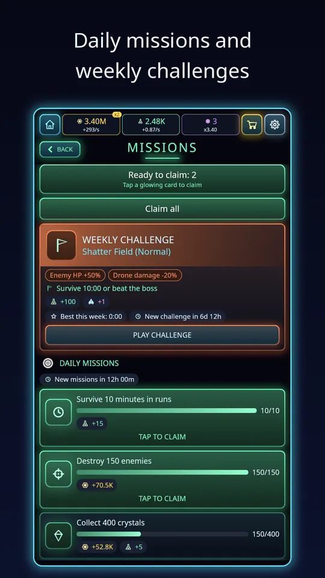

If you have searched for idle survivor games on Android you have probably noticed that the label covers a lot of ground. Here is what the genre means, why the two halves fit together, and what I would check before spending time on one. I make one of these, Void Swarm, so I will use it for examples, and I will keep that honest and specific.
Half one: the swarm survivor
A swarm survivor puts you in an arena, or an endless field, against a growing crowd. You control only movement. Weapons fire on their own, enemies drop experience, and each level-up offers a choice of new weapons or upgrades. Your decisions are where to stand and what to pick. Over a run, a modest start grows into a screen full of effects. In Void Swarm you drag anywhere with one thumb, and hundreds of enemies can be on screen at once.

Half two: the idle base
Void Swarm is built on exactly this combination.
Idle games reward you for time, not only for skill. A base produces currency every second, and you spend it on upgrades that raise production, usually in steep, satisfying curves. The genre's trademark is that it keeps producing while you are away. Combined with a survivor, the base feeds your runs: Scrap and Research Points buy permanent upgrades, and a stronger drone goes further next time. Our article on how the idle base works goes through the details for Void Swarm.
Why the mix works on a phone
Phones reward short sessions. A ten-minute run fits a break, and it is easy to start and stop. The idle half means that even when you cannot play, your progress does not stand still, which removes the guilt of a missed day. And there is always a next step to chase: another sector, a harder tier, another evolution or another prestige.
What to look for in one
Controls that fit a thumb
One-thumb movement with auto-fire is the right call for a portrait phone. Anything that needs several precise buttons feels cramped.
Build variety
The level-up choice is the heart of the genre. Look for many weapons and meaningful combinations. Void Swarm has 20 weapons, 15 passives and 10 evolutions, and 8 drones that start with different weapons and perks. We cover the combination rule in weapon evolutions explained.
Long-term goals
A good one has structure beyond a single run: sectors, difficulty tiers, bosses, a research tree and prestige. Void Swarm has 20 sectors with five tiers each, an Endless mode, a research tree with 216 upgrades and 129 achievements.

A fair monetisation model
This is the one to check closely. Ads should be optional and never interrupt play. Purchases should save time, not gate progress. In Void Swarm the ads are optional rewarded ads only (revive, double a payout, triple offline earnings, reroll missions), Remove Ads turns each ad button into a free bonus, and nothing is required to progress. Read any game's store listing for this before installing.
Language and polish
Text clarity matters in a game full of upgrade cards. Void Swarm ships in 12 languages: English, Dutch, Spanish, French, German, Portuguese, Japanese, Korean, Simplified Chinese, Russian, Italian and Turkish.
How to start in any game of the genre
The same advice holds across the genre. Focus on a few weapons instead of many, spend your early currency on the cheapest upgrades, and let the idle side run while you are away. Our beginner tips for Void Swarm translate that into specifics, and the overview of the game shows the whole picture.

Common worries about the genre
Will it drain my phone or my time? A run is about ten minutes in Void Swarm, and the idle half does not need the game open. You decide how long you play.
Will I get stuck behind a wall? Growth is meant to come from a loop: run, collect, upgrade, run again. If progress slows, prestige and the research tree give you new levers. That is a better sign than one huge difficulty spike.
Is it just a clone? The core idea is shared across the genre, and that is fine. What differs is the detail: the number of weapons, how evolutions work, how the base pays out and how fair the money side is. Those details are what you should compare.
A quick checklist before you install
- Can you play one-handed in portrait?
- Does the store listing say what the ads and purchases are?
- Is there a goal beyond a single run, such as sectors, tiers or bosses?
- Does it work offline, and does the base keep earning?
- Is it available in your language?
If a game answers yes to most of these, it is likely to respect your time.
It also helps to think about how long you want to stay with a game. Some players want a quick distraction between tasks, others want a project that lasts for months. The idle survivor mix covers both, because the same game offers a ten-minute run today and a prestige goal for next week. Pick the one whose pacing matches your own.
Try it
If the genre sounds like your kind of game, you can try Void Swarm: Idle Survivor free on Google Play. It is free to play, it works in short sessions, and your base keeps earning when you put the phone down.
Frequently Asked Questions
What is an idle survivor game?
It combines a swarm survivor, where you dodge crowds while weapons fire automatically and you choose upgrades on each level-up, with an idle base that earns resources over time, even when the game is closed.
Are idle survivor games pay to win?
It depends on the game. Look for optional rewarded ads, a Remove Ads option and purchases that only save time. In Void Swarm, nothing is required to progress, and no ad interrupts a run.
How long is a session in an idle survivor game?
Usually short. In Void Swarm a run lasts about ten minutes and ends with a boss, and the idle base keeps earning between sessions, so a quick visit still counts for something.